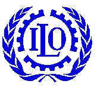

- 国际劳工组织 ILO
- 国际劳工组织工作安全局 ILO SafeWork
- 国际职业安全卫生信息中心 ILO-CIS
- 国际劳工组织北京局 ILO Beijing Office
- 世界卫生组织 WHO
- 国际标准化组织 ISO
- 国外机构和组织网址 International Organizations
- 全球职业安全卫生期刊 International Periodicals
国际劳工组织

历史
国际劳工组织是在1919年第一世界大战结束后召开的和平大会上成立的。1919年4月和平大会通过了《国际劳工组织章程》。国际劳工组织是联合国系统内历史最悠久的专门机构。
创立国际劳工组织首先是出于人道的目的。工人的工作条件日益不能接受，大量的工人遭受剥削，他们的身体、家庭生活和他们的个人发展完全受到忽视。《国际劳工组织章程》在序言中指出现有的劳动条件使大量的工人遭受不公正、苦难和贫困。第二是出于政治目的。如果不改善工人的条件，那么，随着工业化进程的发展，工人的人数将不断增加，可能因此而产生社会不安定，甚至出现革命。序言指出，不公正造成了如此巨大的不安定，竟使世界和平与和谐遭受危害。第三是出于经济目的。由于改善工作条件不可避免地对生产成本带来影响，任何进行社会改良的行业或国家可能会发现自己被置于与竞争对手不利的地位。序言指出，任何一国不采用合乎人道的劳动条件，会成为其他国家愿意改善其本国状况者的障碍。
第二次世界大战中期，来自41个国家的政府、雇主和工人代表出席了在费城召开的国际劳工大会。代表们通过了《费城宣言》。它作为《国际劳工组织章程》的附件，至今仍然是关于国际劳工组织宗旨和目标的宪章。国际劳工组织于1969年成立50周年之际，被授予诺贝尔和平奖。
1999年3月4日，职业律师胡安.索马维亚就任国际劳工局第九任总干事。索马维亚先生长期从事民事和国际事务工作，且声誉卓著。
职责
国际劳工组织是联合国的一个专门机构，旨在促进社会公正和国际公认的人权和工人权益。它以公约和建议书的形式制定国际劳工标准，确定基本劳工权益的最低标准，涵盖：结社自由、组织权利、集体谈判、废除强迫劳动、机会和待遇平等以及其它规范整个工作领域工作条件的标准。国际劳工组织主要在下列领域提供技术援助：就业政策；劳动行政管理；劳动法和产业关系；职业培训和职业康复；工作条件；企业管理和发展；合作社；社会保障；劳动统计；职业安全卫生以及社会性别平等。它倡导独立的工人和雇主组织的发展并向这些组织提供培训和咨询服务。
三方机制
在整个联合国系统内，国际劳动组织拥有独特的三方结构，工人和雇主代表与政府代表平等的参与本组织的活动。
组织机构
国际劳工组织主要通过三个组织机构开展工作。
1、国际劳工大会。国际劳工大会是国际劳工组织的最高权力机关。在正常的情况下，每年6月聚集在日内瓦参加国际劳工大会。每个成员国派两名政府代表、一名雇主代表和一名工人代表以及若干名顾问参会。
国际劳工大会担负以下几项主要任务：
修改国际劳工组织章程。
制定和修订国际劳工公约和建议书，并审查这些公约和建议书在各国的执行情况。
批准国际劳工组织的工作计划和预算以及关于计划和预算执行情况的工作报告。
讨论对全世界具有重大意义的劳工问题，但会议的中心议题是听取国际劳工局长的报告。
大会通过一些决议，为国际劳工组织的总决策和未来活动提出指导性的方针。
大会还设立若干个委员会。一类委员会是常设的，即在大会召开时都要设立，如总务、财务、提案以及实施公约和建议书等委员会；另一类是临时设立的，即根据大会议程上的议题，尤其是需要制定公约和建议书而设立的。委员会的任务是对提交大会的事项进行初步审议，并就审议结果提出报告送交全体大会做决定。
2、理事会。理事会是国际劳工组织的执行机构。
理事会的主要工作是：为大会和其他会议确定议程；指导国际劳工局各项工作；对国际劳工组织总的事务进行监督；关注会议决定的实施情况并就应该采取的后继行动作出决定；讨论两年度预算；决定设立国际劳工组织的其他机构和任命国际劳工局局长等。
理事会下设若干常设委员会：如计划、财务与行政委员会、法律问题和国际劳工标准委员会、结社自由委员会、就业政策委员会、技术合作和多国企业委员会等7个委员会。这些委员会都是三方性结构，所有代表享有独立平等的发言权和表决权。
理事会设主席一名，原则上由政府代表按地区轮流担任，任期一年。每年6月在理事会上改选。副主席两名，分别从工人理事和雇主理事中产生。理事会由56名理事组成，其中包括28名政府代表、14名工人代表和14名雇主代表。在28名政府理事中，有10名常任理事由理事会确定的“主要工业国”委派，而不需要经过选举，是常任的。其余18人由出席大会的成员国政府代表选举确定。经选举产生的理事和副理事任期三年。
在正常的情况下，理事会每年举行三次会议。
3、国际劳工局。国际劳工局是国际劳工组织的常设工作机构。是国际劳工大会、理事会和其他会议的秘书处，受理事会管理。
它的主要职责是：负责起草文件和报告以作为大会和专门会议所需的背景材料；征聘和指导劳工组织在全世界进行技术合作的专家；发行各种出版物和期刊；对世界各国的技术合作计划进行指导和提供咨询；从事教育和研究工作，并与各国劳工部和社会事务部、雇主组织和工会团体紧密合作。因此，该局也是一个行政机构、一个研究和文献中心与活动中心。来自100多个国家约3000名官员和技术专家在日内瓦总部，或在劳工组织承担的技术合作项目的国家，或在劳工组织设在世界各地的40多个地区、区域和分支办公室负责具体行政管理工作。
国际劳工局下设国际劳工标准、就业、社会保护和社会对话四个技术部门。
体面的劳动
面对经济全球化带来的经济和社会环境的变化，国际劳工组织在1999年明确提出该组织当今的首要目标是促进妇女和男人在自由、平等、安全和享有人的尊严的条件下，获得体面的、生产性的工作机会。国际劳工组织制定了旨在实现“体面的劳动议程”的四大战略目标。它们是工作中的基本原则和权利、就业、社会保护和社会对话。体面的劳动是所有4个战略目标的共同核心。同时明确将发展和社会性别平等两大问题纳入劳工组织的4大战略主流。
国际劳工组织都灵国际培训中心
设在意大利都灵的国际培训中心是国际劳工组织和意大利政府于1965年联合建立的。起初它是一个技术和职业培训机构，而后发展成为一个研究生和高层次的在职培训机构。目前，该中心是在就业、劳工权利、社会保护和开发管理领域实施国际劳工组织培训计划的重要部门，也是为整个联合国系统服务的培训中心。目前，该中心已培训了约10万人次，学生遍布170多个国家。
中心所开展的培训活动约有半数是在校园内进行，另一部分为实地考察。通过互联网进行的远程计划正在使中心的活动不断得到拓展。中心的培训计划是面向非洲、美洲、阿拉伯国家、亚洲和太平洋地区以及欧洲的发展中国家和转轨国家的具体需求而制定的。开展的培训课程也根据参加培训人员的不同语言（阿拉伯语、汉语、英语、葡萄牙语、俄语和西班牙语）进行。这些针对具体需求开展的培训是有关国家执行的计划或项目中的组成部分，从而也为它们的总体发展作出贡献。
该中心在其众多内容的培训领域中，常年设立提供关于职业安全卫生各项主题的两至三周的培训课程。每年的培训主题都不固定，而是根据一些国际技术合作的计划和活动而设立。
该中心每年出版培训课程手册，其中包括每次课程的时间、地点、上课的语言以及参加培训的费用等。
欲想了解详情，请点击：http://www.ilo.org/global/about-the-ilo/lang--en/index.htm

相关链接：